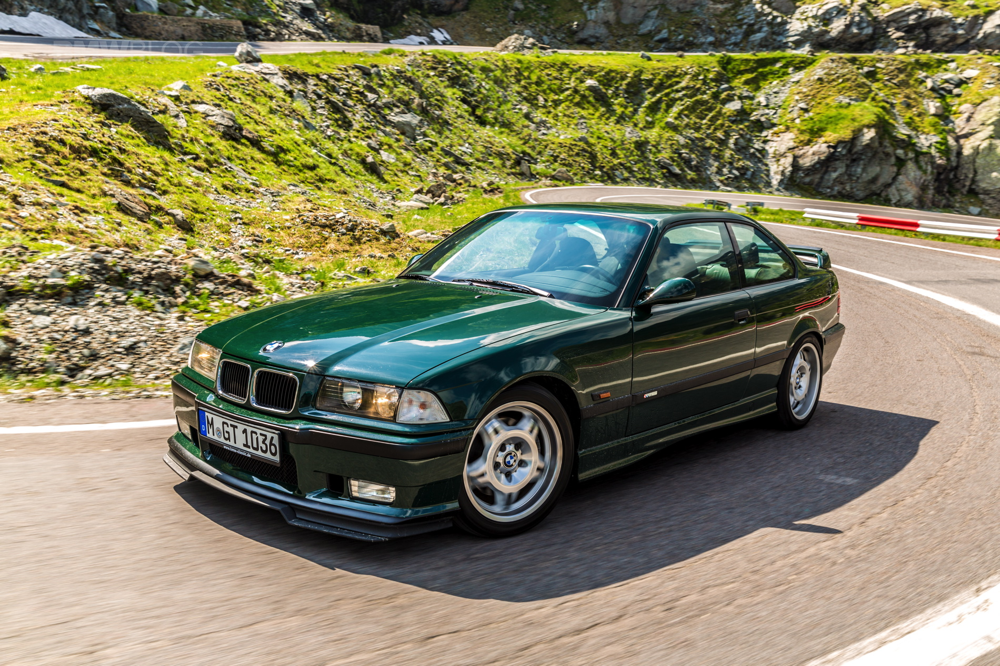
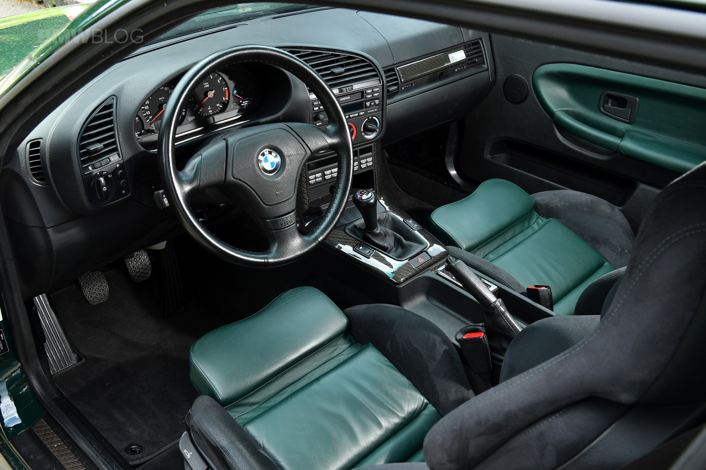
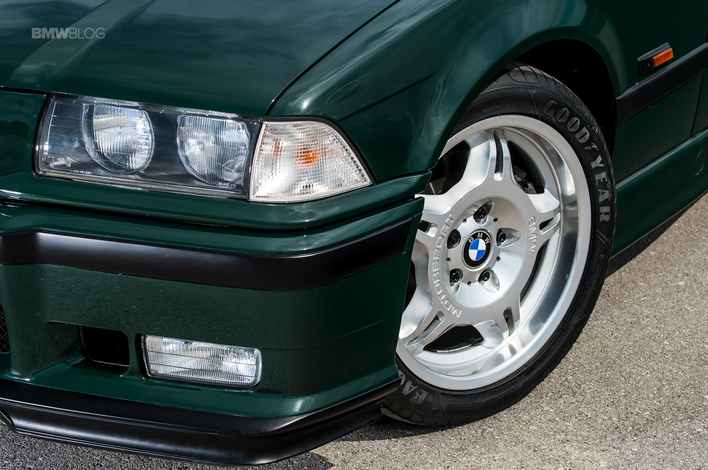

BMW E36 M3

The E36 M3 arrived at a turning point for BMW M, bridging the gap between the raw, motorsport-derived origins of the M division and the refined performance philosophy that would define its future. Unlike its predecessor, which felt like a race car barely tamed for the road, the E36 M3 was engineered with a broader audience in mind, balancing high-revving excitement with real-world usability. It retained the precision and poise expected from an M car but wrapped it in a more mature, aerodynamic shape that reflected the design language of the 1990s. This was the first M3 that felt at home both on the autobahn and in daily traffic, capable of effortless high-speed cruising while still rewarding a committed driver on a winding road.
Yet, despite its more civilized demeanor, the E36 M3 never lost sight of its purpose. Its chassis was fluid and communicative, its steering direct, and its balance near perfect, reinforcing BMW’s reputation as the builder of the ultimate driver’s car. It was a machine that rewarded subtle inputs and rewarded those who took the time to learn its nuances. Though some purists initially questioned its softer edges compared to the raw aggression of its predecessor, the E36 M3 carved out its own legacy as a more complete package—one that proved an M car could evolve without sacrificing the very essence that made it special.
The E36 M3 was the first of its lineage to be offered in multiple body styles, available as a coupe, sedan, and convertible—each maintaining the same fundamental balance and driver-focused engineering. European models featured a more potent evolution of BMW’s inline-six, with the early 3.0-liter version producing 286 horsepower before being upgraded to a 3.2-liter unit with 321 horsepower in 1995. Meanwhile, North American models were detuned, featuring a single VANOS 3.0-liter and later a 3.2-liter engine, producing 240 horsepower in both iterations. While this difference led to debates among enthusiasts, all versions retained the M3’s signature characteristics—sharp handling, a responsive chassis, and a near-perfect weight distribution. Transmission options included a five-speed manual for early models, later upgraded to a six-speed in Europe, while the U.S. models retained the five-speed. An SMG automated manual was also available in later years, though most enthusiasts favor the traditional manual gearbox.
When buying an E36 M3 today, the car’s overall condition is far more important than the specific variant. These cars are known for their engaging dynamics, but that engagement often meant hard driving, leading to potential wear on key components. Cooling systems are a well-documented weak point, with radiators, water pumps, and expansion tanks often requiring replacement. The rear subframe mounting points can develop cracks over time, particularly on track-driven cars. Vanos issues, particularly on the 3.2-liter engines, are another common concern, as are worn suspension bushings and failing window regulators. Well-maintained examples are still highly rewarding to drive, and despite their relative affordability compared to earlier and later M3s, finding an unmodified, original car is becoming increasingly difficult. Those seeking a purer driving experience may prefer the coupe, while the sedan offers a rare blend of performance and practicality, making it an appealing choice for enthusiasts who want an M3 with a touch of sleeper appeal.